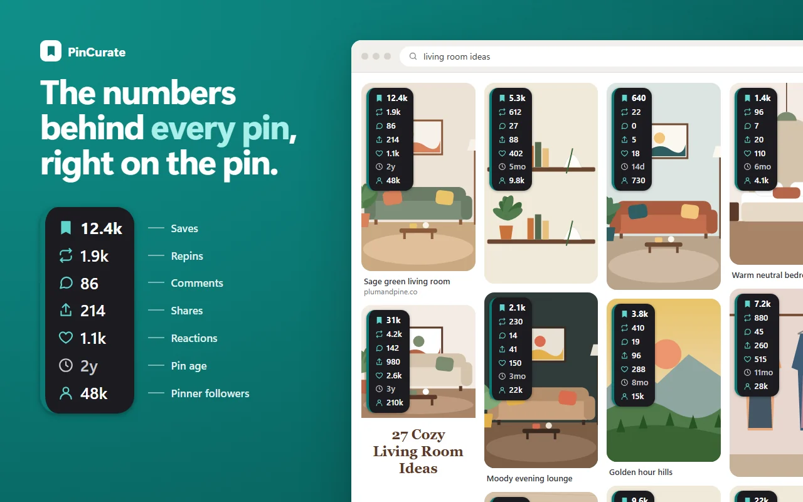
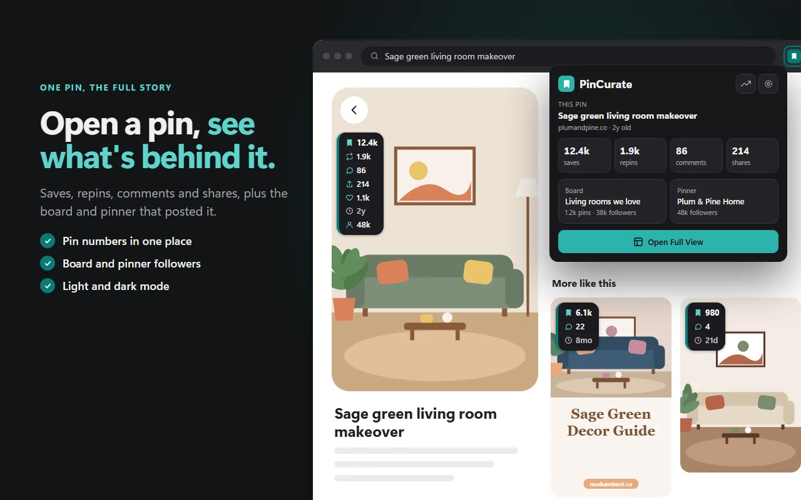
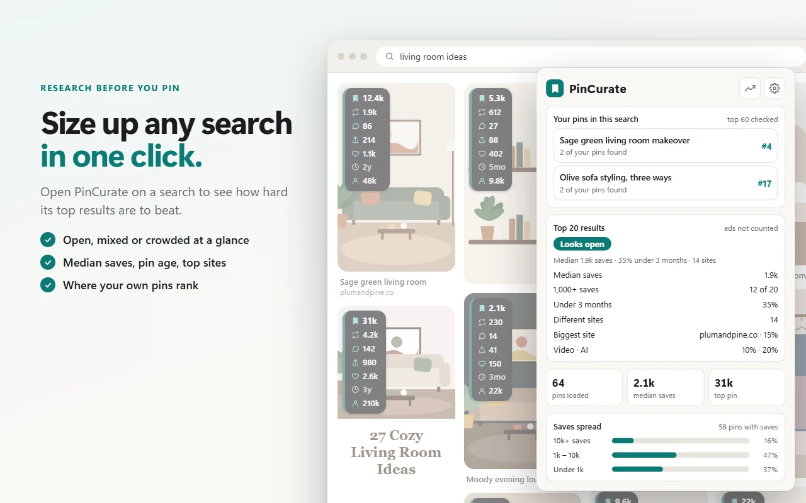
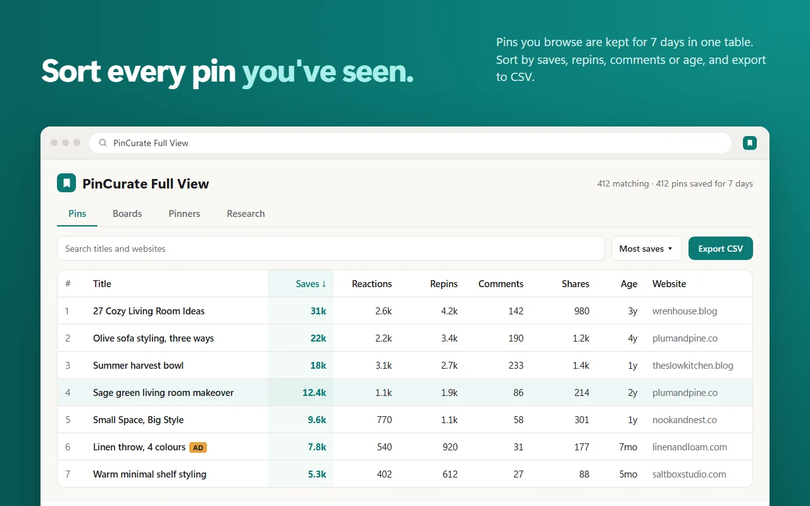
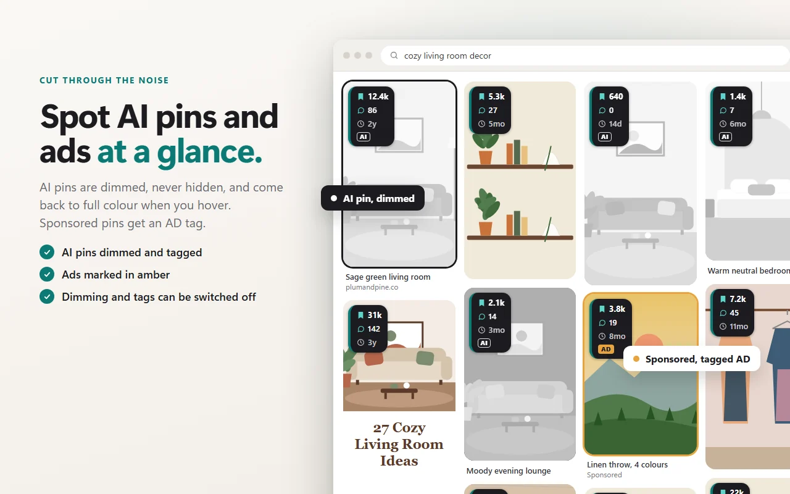
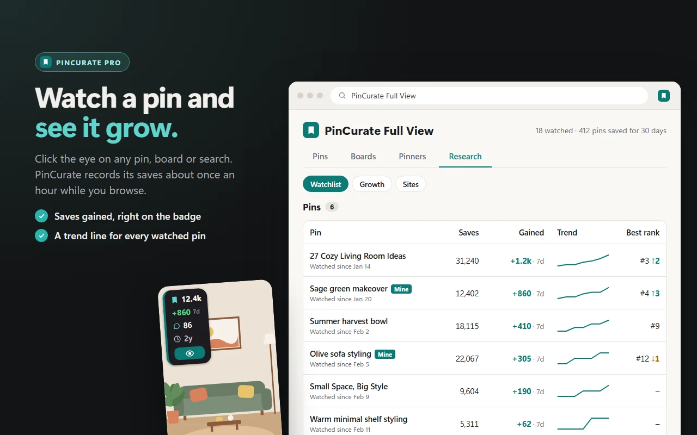
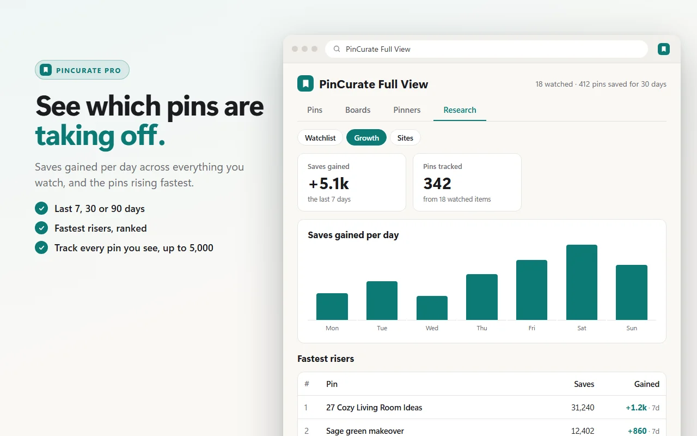
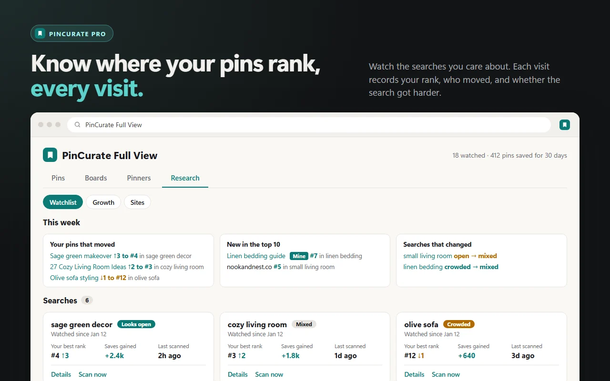
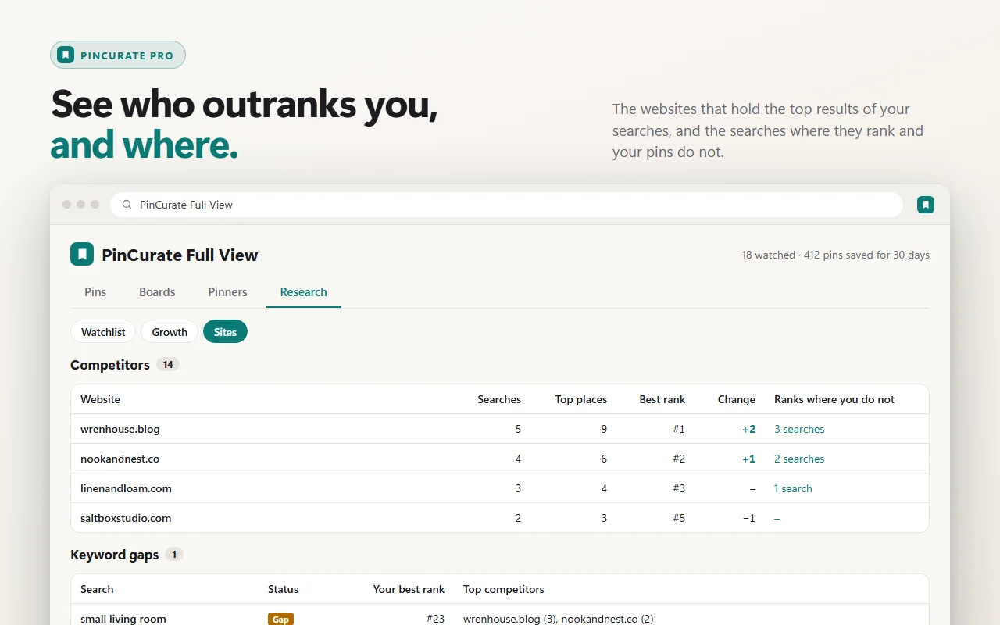

Chrome extension for Pinterest research
See the numbers behind every pin.
Saves, repins, comments and age on every Pinterest pin, right where you browse. Find what works, size up a search before you post, and with Pro, track how your pins grow and where they rank over time.
- No account
- Reads only, never posts
- Your data stays in your browser

See it in a minute and a half
A quick tour of everything in Free and Pro.
Captions are part of the video. Sample data shown.
Free
Everything you need to study pins
Free forever. No sign-up, no limits on the badges.
Stats on every pin
A small badge on each pin shows saves, repins, comments, shares, reactions, age and the pinner's followers. Pinterest hides most of these; PinCurate puts them where you look.
- Every number on every pin, free
- Choose which numbers the badge shows
- Three badge sizes

Size up any search before you pin
Open PinCurate on a search and see how hard its top 20 results are to beat: median saves, how fresh they are, which sites win, and a clear verdict.
- Looks open, mixed or crowded
- Saves spread and pin age at a glance
- Where your own pins rank (1 site on Free, 10 with Pro)

Sort every pin you have seen
Pins you browse are kept in one table for 7 days (up to 90 with Pro). Sort by saves, repins, comments or age, group them by board or pinner, and export to CSV.
- Pins, Boards and Pinners tabs
- Search titles and websites
- CSV export of the rows shown (every row with Pro)

Spot AI pins and ads
AI-made pins are dimmed, never hidden, and come back to full colour on hover. Sponsored pins get an AD tag. Both can be switched off.
- Cut through the noise in a busy feed
- Optional slow auto-scroll to load more pins

PinCurate Pro
Free shows how pins stand.
Pro shows how they change.
A pin's saves today tell you little. How fast they grow, and where your pins rank week after week, tell you what to make next.
Watch a pin and see it grow
Click the eye on a pin's badge, or Watch in the toolbar popup on a pin, board or search page. PinCurate records its saves about once an hour while you have Pinterest open, and watched pins refresh on their own even when no page shows them.
- Saves gained, right on the badge
- A trend line for every watched pin
- Your own pins marked Mine and listed first
- Saves over time in the toolbar popup

See which pins are taking off
Saves gained per day across everything you watch, and the pins rising fastest. Switch on "track every pin" to record up to 5,000 pins you come across, not just the ones you watch.
- Last 7, 30 or 90 days, or all time
- Fastest risers, ranked
- CSV export of the whole history

Know where your pins rank, every visit
Watch the searches that matter to you. Each visit records your best rank and the change since last time. This week sums up which of your pins moved, what is new in the top 10, and which searches got harder. Click a watched search or board for its details, such as the pins that moved in and out of the top results.
- Rank history for up to 10 of your sites
- Open, mixed or crowded, tracked over time
- Board follower trends

See who outranks you, and where
The websites holding the top results across your watched searches, how they moved, and the keyword gaps: searches where competitors rank and your pins do not.
- Competitors ranked by top places
- Keyword gaps, ready to export
- Built from your own visits, nothing else

Free or Pro
Start free. Upgrade when you want to see change over time. Lifetime includes everything in Pro.
| Feature | Free | Pro and Lifetime |
|---|---|---|
| Price | $0 | $4.99 a month, $19.99 a year, or $49.99 once |
| Saves, repins, comments, shares, reactions, age and followers on every pin | Yes | Yes |
| AI pins dimmed, ads tagged | Yes | Yes |
| Toolbar popup: search verdict, saves spread, pin details | Yes | Yes |
| Your rank in a search (My sites) | 1 site | Up to 10 sites |
| Full view rows | First 7 pins, 3 boards, 3 pinners | Every row, pages of 10, 50 or 100 |
| Filters by saves, repins, comments, shares and date | No | Yes |
| CSV export | Rows shown | Everything, watchlist included |
| Keep saved pins | 7 days | Up to 90 days |
| Watch pins, boards and searches | No | Yes |
| Saves history, growth chart, fastest risers, saves over time in the popup | No | Yes |
| Track every pin you see (up to 5,000) | No | Yes |
| Rank history and This week | No | Yes |
| Board follower trends, details for each watched board and search | No | Yes |
| Competitors and keyword gaps | No | Yes |
Start free, upgrade when you need it
One key unlocks Pro in up to 3 browsers. No account.
Free
See how pins stand right now
Add to ChromeWhat you get
- Saves, repins, comments, shares, age and followers on every pin
- AI pins dimmed, ads tagged
- Popup: search verdict, saves spread, pin details
- Your rank in a search for 1 site
- Full view: first 7 pins, 3 boards, 3 pinners
- Keep saved pins for 7 days
- CSV export of the rows shown
Pro
Billed every month, cancel any time
$1.67 a month, billed once a year
Get Pro Monthly Get Pro YearlyEverything in Free, plus
- Watch pins, boards and searches
- Saves history, growth chart and fastest risers
- Track every pin you see, up to 5,000
- Rank history for up to 10 sites, and This week
- Competitors and keyword gaps
- Every row, filters and full CSV export
- Keep saved pins for up to 90 days
Lifetime
Pay once, no renewals
Get LifetimeEverything in Pro, plus
- No subscription to manage or cancel
- All future Pro updates included
- Pays for itself in under 3 years of Yearly
Prices in US dollars. Tax is added at checkout where it applies. Payments are handled by Dodo Payments, our merchant of record. Refund policy.
After you pay, your licence key is shown on screen and sent by email. Everything you save on Free stays when you upgrade.
Questions
What does Pro add?
Pro shows how pins change over time: watch pins, boards and searches, see saves gained and the fastest risers, your rank in watched searches on every visit, a weekly summary of what moved, and the competitors and keyword gaps across your searches. It also removes the free limits: every row, all filters, full CSV export, pins kept up to 90 days and up to 10 of your own sites.
How much does Pro cost?
$4.99 a month or $19.99 a year ($1.67 a month), or $49.99 once for Lifetime. Prices are in US dollars; tax is added at checkout where it applies. Free stays free.
What is the difference between Pro and Lifetime?
Nothing in the features: Lifetime includes everything in Pro. You pay once instead of every month or year, there is no subscription to cancel, and all future Pro updates are included.
How do I get Pro?
In Pricing above, choose Monthly or Yearly on the Pro card, or Lifetime, and pay on the Dodo Payments checkout page. Your licence key is shown on the next page and sent by email. Paste it in PinCurate, Settings, PinCurate Pro, and click Apply. Nothing you save on Free is lost when you upgrade.
Do I need an account?
No. PinCurate has no account or sign-in. Pro is unlocked with a licence key that you paste into the extension's settings.
How do I get my licence key?
Right after you pay, the thank-you page shows your key, and Dodo Payments emails it to you as well. Paste it in PinCurate's settings under PinCurate Pro and click Apply.
Can I use Pro in more than one browser?
Yes. One key works in up to 3 browsers. To move it, click Remove key in the settings of the old browser first.
Does PinCurate post, save or change anything on my Pinterest account?
No. It only reads. It never posts, saves, follows, likes or changes anything.
Where is my data kept?
In your browser's local extension storage, for the number of days you choose. You can delete it any time from the settings. See the privacy policy.
How do I cancel Pro?
Use the link in your purchase email from Dodo Payments, or write to us. If you cancel at the end of the billing period, Pro stays active until then; if you cancel immediately, it ends right away. Lifetime is a one-time payment, so there is nothing to cancel.
What happens to my watchlist if Pro ends?
Nothing is deleted from your watchlist or growth history. Tracking stops, and everything comes back when you upgrade again.
Is PinCurate made by Pinterest?
No. PinCurate is an independent tool and is not affiliated with, endorsed by or sponsored by Pinterest.
Stop guessing which pins work.
Start with the free badges today. Add Pro when you want to track how your pins grow and where they rank.